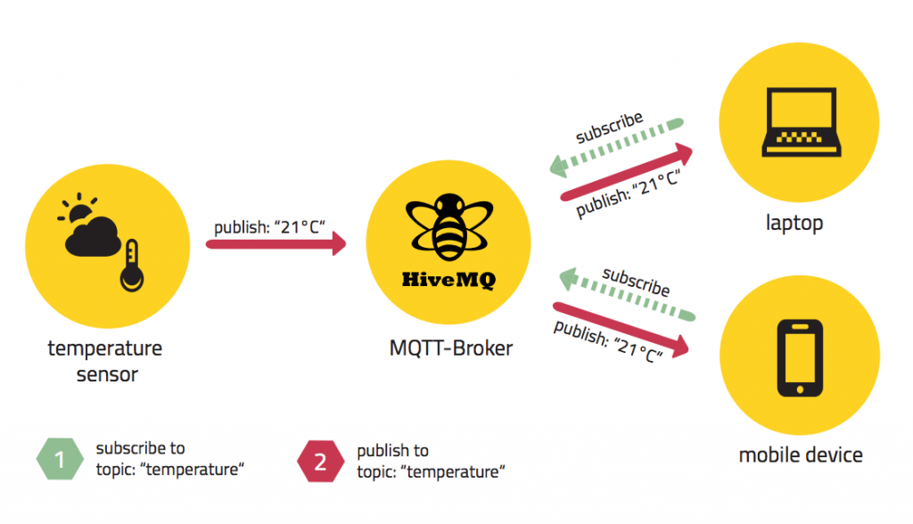
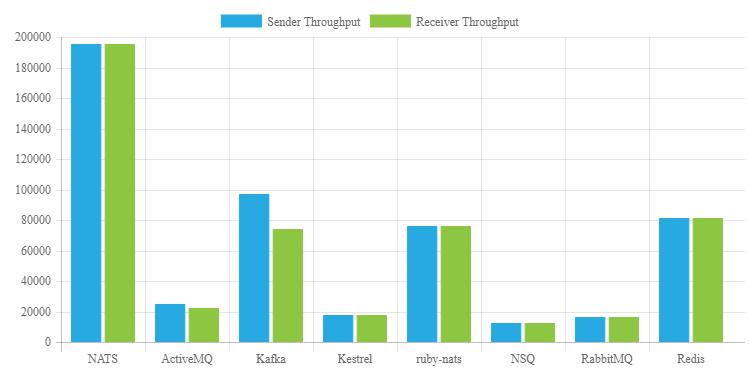
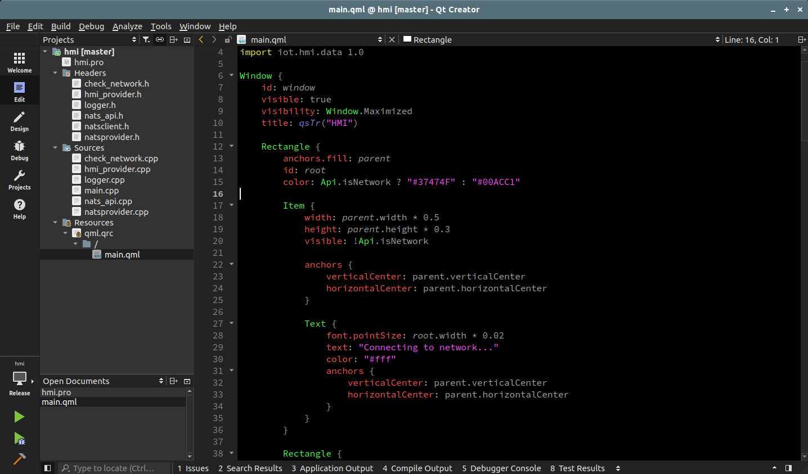
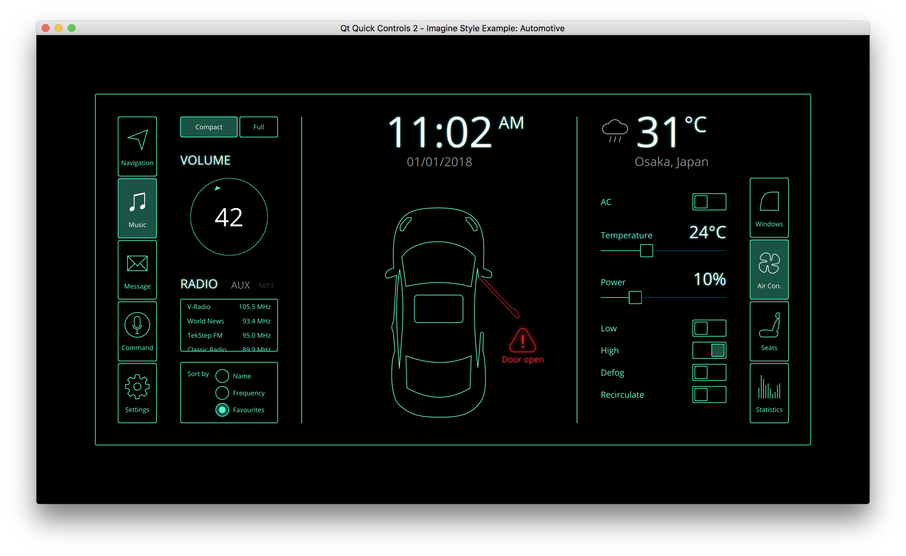

ИССЛЕДОВАНИЕ И ПРИМЕНЕНИЕ МИКРОСЕРВИСНОЙ АРХИТЕКТУРЫ В СФЕРЕ Automotive
Руководитель: Е.М. Гриценко
Студент: Д.О. Бракк
Актуальность работы
Запрос на исследование и создание прозрачной, эффективной и доступной архитектуры программного обеспечения для бортовых компьютеров всё ещё актуален.
Цель работы
- исследование концепции микросервисной архитектуры в сфере автомобильной промышленности
- создание базового прототипа программного решения на основе данной концепции
Научная новизна работы
концепция архитектуры, которая позволит:
- уменьшить скорость разработки
- увеличить отказоустойчивость
- предоставить конечную прозрачную архитектуру организации логических компонентов
Бортовой компьютер марки Tesla

Бортовой компьютер марки Tesla

Схема процесса сборки Yocto Linux

Базовые подсистемы бортового компьютера
- человеко-машинный интерфейс / HMI
- подсистема работы с датчиками и механическими системами автомобиля
- подсистема позднего оповещения
- подсистема реагирования на окружающую среду
- подсистема блокировки и разблокировки
- интеграция с мобильными устройствами
- подсистема работы с облачным сервисом
Пример схемы микросервисов

Схема: бортовой компьютер - облако

Схема: облако - бортовой компьютер

Уровни протокола MQTT

Структура протокола MQTT
Производительность шины сообщений NATS
Qt Creator
Qt Framework
Прототип бортового компьютера
Human Machine Interface
- Qt Framework
- Qt Quick
- C++14
- C++ Nats Library
Сервис получения телеметрии
- Golang ARM
- Golang NATS Library
Сервис шлюза работы с интернетом вещей на базе MQTT протокола
- Golang ARM
- Golang NATS Library
- Eclipse MQTT Paho Implementation
Прототип облака
- Websocket server: Golang
- MQTT client: Golang
- NATS
- Front-end: React.js/Redux.js
Результаты работы
- была сформулирована основная концепция архитектуры микросервисов
- было обосновано использование протокола MQTT для организации шлюза взаимодействия с «интернетом вещей»
- рабочий прототип бортового компьютера на базе микросервисов